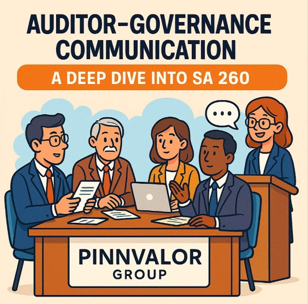

Auditor-Governance Communication: A Deep Dive into SA 260
In the world of auditing, communication is more than just a courtesy—it’s a critical pillar that supports transparency, accountability, and trust. One of the most important frameworks guiding this aspect is SA 260, titled "Communication with Those Charged with Governance". Issued by the Institute of Chartered Accountants of India (ICAI), SA 260 outlines how auditors should engage with those responsible for overseeing an entity’s strategic direction and financial integrity.
Is the tax potential of AIF investments being fully leveraged?
Great audits don’t just uncover figures—they open conversations. SA 260 empowers auditors to communicate clearly, confidently, and constructively with governance bodies, making financial reporting more accountable and informed.
What Is SA 260 All About?
SA 260 requires auditors to communicate relevant audit-related matters to “those charged with governance” (TCWG)—a term that typically refers to the board of directors, audit committee, or other governing bodies.
This communication is not a formality. It plays a key role in:
- Ensuring accountability
- Enhancing transparency
- Fostering informed decision-making
The standard encourages two-way communication, which helps both auditors and governance bodies understand each other’s perspectives, expectations, and concerns.
Key Objectives of SA 260
SA 260 aims to:
- Identify and communicate significant audit findings
- Enable TCWG to fulfill their oversight responsibilities
- Promote effective two-way interaction between auditors and governance bodies
- Ensure transparency in audit scope, planning, and results
What Must Be Communicated?
Under SA 260, auditors are expected to communicate several important elements, such as:
- The auditor’s responsibilities under auditing standards
- Planned scope and timing of the audit
- Significant findings from the audit, including:
- Qualitative aspects of accounting practices
- Difficulties encountered during the audit
- Disagreements with management (if any)
- Material misstatements or uncorrected errors
- Independence and objectivity of the auditor
These communications can be oral or written, but for clarity and documentation, written communication is often preferred—especially for matters of significance.
Why Is SA 260 Crucial?
1. Improves Audit Quality
Open communication helps auditors understand the governance structure better and tailor their audit approach accordingly.
2. Strengthens Oversight
TCWG gain deeper insights into risks, controls, and financial reporting processes—enhancing their ability to oversee management effectively.
3. Builds Trust and Transparency
When auditors proactively engage with governance bodies, it fosters mutual trust and reduces the risk of surprises or misunderstandings.
4. Supports Ethical Standards
SA 260 reinforces the importance of professional skepticism, independence, and accountability in audit engagements.
Practical Challenges in Implementation
While the standard is clear in its intent, its application may present some challenges:
- Identifying the appropriate TCWG in complex organizations
- Balancing communication without breaching confidentiality
- Maintaining independence while promoting open dialogue
- Ensuring consistency and completeness of communication across different audits
Auditors must apply professional judgment to navigate these challenges effectively.
Conclusion
SA 260 is not just a checklist—it’s a mindset. By emphasizing transparent and timely communication between auditors and governance bodies, it reinforces the integrity of the audit process and the financial reporting ecosystem.
In an era of increasing scrutiny and regulatory expectations, effective auditor-governance communication is no longer optional. It’s essential.
Have thoughts or questions on SA 260? Share them in the comments below or get in touch to explore more on effective audit practices.